Microsoft Power Point
INDICE
Para utilizar cualquier programa es fundamental conocer y dominar la pantalla y los elementos que la componen.
Ficha Cuadro para Herramientas
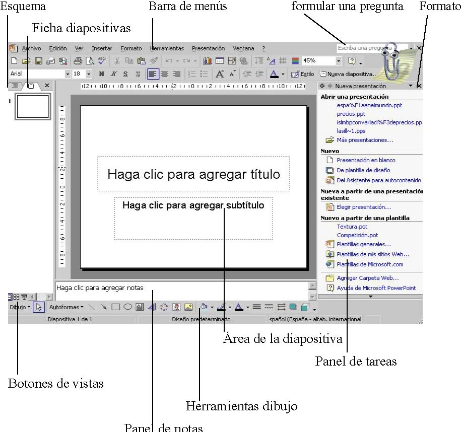
Panel de diapositivas: aquí es donde escribirá y diseñará su presentación.
Barra de títulos: contiene el nombre que le ha dado al documento, si hasta el momento no lo ha guardado con ningún nombre aparecerá como Presentación 1. Barra de menús: contiene los menús Archivo, Edición, Ver, Insertar, Formato, Herramientas, Presentación, Ventana… Barra de herramientas: contiene una serie de botones que permiten realizar las funciones y tareas más usuales de Power Point. También puede personalizar la barra de herramientas para que aparezcan las funciones que le resulten más útiles. Para ello haga clic en en el menú Ver, luego en las opción Barras de herramientas y por último en Personalizar.
Panel de tareas: es la ventana de las aplicaciones Office que proporciona comando utilizados frecuentemente. Panel de diapositivas y esquema: fichas que permiten visualizar rápidamente las diapositivas introducidas hasta el momento.
Panel de notas: en esta zona de la pantalla podrá escribir las notas que acompañen a cada diapositiva. Barras de desplazamiento: permiten desplazarse por las diferentes diapositivas y mostrar las zonas que quedan fuera de la pantalla.
Power Point ofrece las siguientes vistas:
Normal. Es la vista habitual de trabajo de Power Point. Muestra la diapositiva actual e incluye un panel con dos fichas. Clasificador de diapositivas. Muestra el conjunto de diapositivas de la presentación. Página de notas. Muestra una página que incluye la diapositiva junto a su nota. Presentación. Se trata de ejecutar la presentación en sí.
La vista normal incluye dos paneles que pueden ocultarse o mostrarse sin más que arrastrar el extremo de sus ventanas:
Panel de notas. Situado en la parte inferior, permite agregar una nota a cada diapositiva.
Panel de fichas. Situado a la izquierda, incluye dos fichas que facilitan la organización de la presentación. La ficha Esquema muestra el texto principal de las diapositivas en distintos niveles. La ficha Diapositivas muestra el conjunto de diapositivas que componen la presentación.
Para seleccionar una vista:
Elegir la vista en el menú Ver o hacer clic en alguno de los botones de vistas situados en la parte inferior izquierda de la ventana de la aplicación.
La forma de guardar un documento en Power Point es similar a la de otras aplicaciones. Habrá que ir al menú Archivo|Guardar como para asignar un nombre y una localización al archivo y, hecho esto, hacer un clic sobre el botón Guardar. Si el documento ya estaba creado y se quiere guardar los cambios bastará con ir al menú Archivo|Guardar. A la hora de guardar el documento, la opción Guardar como, permite hacerlo en distintos formatos, entre otros:
-Presentaciones (*.ppt): para salvar el documento como documento de PowerPoint.
-Windows Metafile (*.wmf): para salvar el documento como imagen.
-Esquema/RTF (*.rtf): para salvar el documento en un formato intercambiable.
-Plantillas de presentación (*.pot): para salvar el documento como una plantilla
-PowerPoint (*.ppt): si se quiere utilizar este tipo de diapositiva como plantilla.
3.-¿Cómo crear una diapositiva nueva?
Para crear una diapositiva nueva hay que ir al menú Insertar y seleccionar la opción Nueva Diapositiva, o hacerlo a través del botón que a tal efecto aparece en la barra de estado. Al hacerlo se muestra una ventana en la que se debe elegir, como ya se ha hecho al principio, el diseño que más se ajuste al tipo de diapositiva con la que se va a trabajar. .
Formato de la diapositiva
Antes de comenzar a trabajar, hay que tener en cuenta cuál va a ser el destino que se va a dar a las diapositivas que se creen: si se van a filmar convirtiéndolas en diapositivas físicas, se les ha de dar unas dimensiones, mientras que si el objetivo es una presentación en pantalla, éstas serán otras. Para definir las dimensiones de las diapositivas se irá al menú Archivo|configurar página.
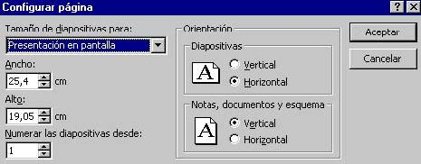
-Tamaño de diapositivas para: determina el tamaño. Si se van a filmar las diapositivas seleccionará un tamaño de 35 mm. Si van a crear transparencias elegirá un tamaño A4 o carta.
Por último, si se va a hacer una presentación en pantalla habrá que elegir la opción Presentación en pantalla.
-Numerar las diapositivas desde: Indica desde qué número se quiere numerar las presentaciones.
-Orientación: Indica la orientación, horizontal o vertical, de las diapositivas.
Cambiar color a la diapositiva
Para cambiar la apariencia de una diapositiva puede cambiar el color de fondo o bien asignarle una combinación de colores completa.
Para aplicar una combinación de colores completa, haga clic en el botón Estilo de la diapositiva y en el panel de tareas seleccione Combinaciones de colores. Si desea aplicar la combinación sólo a algunas diapositivas, selecciónelas primero y luego elija la combinación de colores que desee aplicar.
Para cambiar solamente el fondo, haga clic en el menú Formato y en Fondo. En el cuadro relleno de fondo haga clic en la flecha situada a la derecha del cuadro. Seleccione un color en la combinación de colores que se aplica en ese momento, haciendo clic sobre el color sugerido y luego en Aplicar.
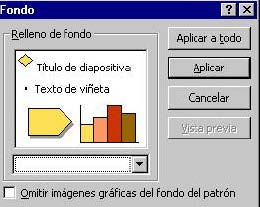
El programa presenta una serie de colores estándar. Si se desea otro color distinto, se deberá hacer un clic en Más colores para elegir dentro de toda la gama de colores de que disponga el ordenador. Especificados los colores que interesan, se pueden aplicar las modificaciones a una sola diapositiva – a la diapositiva en la que se estuviera al acceder a este menú - o a todas las diapositivas del documento. Para ello se debe elegir el botón adecuado en la ventana Combinación de colores: Aplicar a todo o Aplicar. Por otro lado, una vez especificados los colores que se quieren utilizar para cada uno de los elementos, se puede hacer que esa combinación de colores sea la estándar. Para ello, en Personalizada de la ventana de Combinación de colores, hay un botón que dice Agregarcomo combinación estándar.
4.- ¿Cómo imprimir las diapositivas? El modo de imprimir las diapositivas es muy parecido al de cualquier otro programa. Se acude, en el menú Archivo, a la opción Imprimir. -Impresora: pregunta cuál va a ser la impresora que se va a utilizar para imprimir. Además, a través del botón Propiedades se controla el tamaño del papel de la impresora, la orientación, etc... -Intervalo de impresión: permite determinar las diapositivas que se van a imprimir: una, varias o todas. -Copias: desde aquí se le indica a la impresora el número de copias que tiene que hacer del documento.
-Imprimir: éste menú desplegable recoge diferentes opciones de impresión como, por ejemplo, el número de diapositivas por página.
5.- Activar y seleccionar diapositivas Para activar una diapositiva existen diversas maneras:
Hacer clic sobre el icono de la dispositiva en la ficha esquema. Utlizar la barra de desplazamiento vertical del área de la diapositiva o los botones y , situados debajo.
Para seleccionar varias fichas, utilizar el método habitual de selección en Windows con los iconos de la ficha esquema o con las miniaturas.
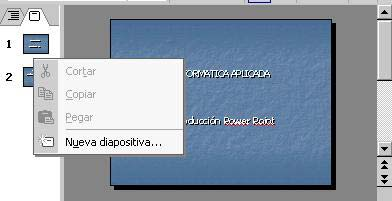
Para seleccionar diapositivas consecutivas, mantener pulsado la tecla Mayúsculas. Para seleccionar diapositivas no consecutivas, mantener pulsado la tecla Control.
Añadir y eliminar diapositivas
Para añadir una nueva diapositiva: Hacer clic entre dos miniaturas de diapositiva o, en la ficha esquema activar la diapositiva previa a la nueva diapositiva. Elegir Nueva diapositiva en el menú insertar o en el menú contextual. Para eliminar diapositivas: Selecciona las diapositivas que se desean eliminar. Elegir Eliminar diapositiva en el menú contextual asociado a la selección. C• O bien, pulsar la tecla Suprimir o la tecla Retroceso
Una diapositiva puede incluir diversos objetos. Los diseños de Power Point facilitan la tarea de incluir y organizar cada uno de estos objetos en la diapositiva
Seleccionas las diapositivas a las que se desea aplicar un diseño determinado.
Elegir Formato/Diseño de la diapositiva. Aparecerá el panel de tareas Diseño de la diapositiva.
Hacer clic sobre cualquiera de los diseños ofrecidos en el panel de tareas. Utilizar la barra De desplazamiento para moverse por la ventana y ver todos los diseños.
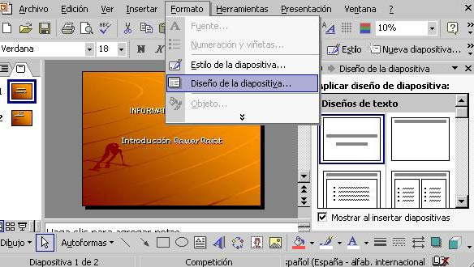
Los diseños se encuentran clasificados según el tipo de contenido: sólo texto, sólo objetos, texto y objetos y otros diseños.
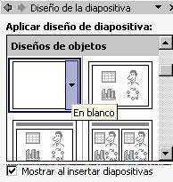
Las diapositivas tienen un diseño asociado. Para crear un diseño propio, seleccionar en blanco dentro del grupo Diseños de objetos del panel de tareas de diseño diseño de la diapositiva. Aunque los marcadores de posición de texto están vacíos, una pequeña muestra indica el formato que tendrá el texto al introducirlo. Al seleccionar un diseño que incluya algún objeto, se puede decidir el tipo deseado sin más ç que hacer clic en alguno de los botones que aparecen dentro del área reservada al objeto.
6.- Asistente de autocontenido Seleccionar Archivo/Nuevo o pulsar la combinación Control+U para abrir el panel de tareas Nueva Presentación.
Hacer clic en la opción del asistente para auto contenido que aparece en la sección nuevo.
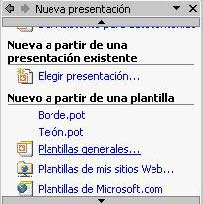
Tras leer la página de presentación del asistente, hacer clic en Siguiente. Hacer clic sobre alguno de los botones de la izquierda correspondientes a distintos tipos de presentación o hacer clic en Todos. Seleccionar el tipo concreto en la lista de la derecha. Hacer clic en Siguiente. En la siguiente página indicar el medio en el que se realizará la presentación: en pantalla, para la web, en transparencias de blanco y negro o a color, o mediante diapositivas. Hacer Clic en siguiente.
CTI • Unra
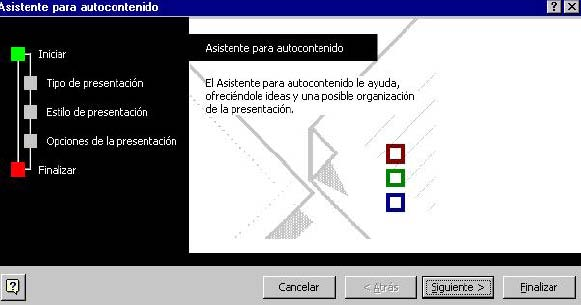
Escribir en la nueva página un título para la presentación y si desea, algunos elementos comunes, como un pie de página o el número de cada diapositiva. Hacer clic en siguiente y después en Finalizar o directamente en Finalizar.
Power Ponint incorpora dos tipos de plantillas:
Plantillas de Presentación. Crean una presentación genérica basada en un tema específico y utilizando cierto diseño.
Plantillas de Diseño. Son un conjunto de estilos correspondientes a los diferentes elementos que componen una diapositiva y que se aplican a todas las diapositivas o a las que estén seleccionadas.
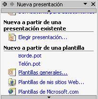
Para crear una nueva presentación basada en una plantilla de presentación: Seleccionar Archivo/Nuevo o pulsar control+U para abrir el panel de tareas Nueva presentación. Bajo la sección nuevo a partir de una plantilla, hacer clic sobre alguna de las plantillas recientemente utilizadas.
También, hacer clic en plantillas generales y elegir alguna de las plantillas contenidas en la ficha presentaciones del cuadro de diálogo de plantillas. Para aplicar una plantilla de diseño a un conjunto de diapositivas de una presentación:
Seleccionar las diapositivas a las que se desea aplicar los estilos de una plantilla.
Elegir Formato/Estilo de la diapositiva o hacer clic en el botón
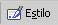
de la barra de herramientas Formato, aparecerá el panel de tareas Estilo de la diapositiva.Hacer clic sobre cualquiera de las plantillas de la lista ofrecida en el panel de tareas. Utilizar la barra de desplazamiento para ver todas las plantillas disponibles en la ventana.
8.- ¿Cómo escribir?
Una vez creado el archivo se puede empezar a introducir el texto en la presentación. Se hace simplemente un clic con el ratón en el recuadro correspondiente al título ( Haga clic para agregar título) o al cuerpo ("Haga clic para agregar texto), que aparece marcado por unas líneas discontinuas. Cada uno de estos recuadros se denomina marcador de posición. A continuación, ya se puede escribir el texto utilizando el teclado.
Hay dos cuadros de marcaje: en el primero se escribe el título de la diapositiva y en el segundo las ideas que se quieren expresar. Es importante tener en cuenta que la utilidad fundamental de esta aplicación (en lo que respecta a los textos), no es la de funcionar como un procesador de textos, sino como apoyo en la explicación de conceptos, por tanto, el formato va a ser el de un esquema, en el que cada párrafo representará una idea.
Cómo cambiar el texto
Una vez escrito un texto, éste no es definitivo, es decir, puede ser modificado o corregido. Para poder cambiar un texto en primer lugar habrá que seleccionar el cuadro de marcaje, haciendo un clic sobre él. A continuación se hará un nuevo clic sobre el texto con el que se quiera trabajar. Aparecerá así un cursor, indicando cuál es la posición del texto. A partir de este momento todo funcionará como en cualquier procesador de textos a la hora de cambiar el tipo de fuente, el tamaño o el tipo de la letra, la alineación, etc... Para cualquiera de estas opciones se acudirá a la primera parte del menú Formato.
Esta aplicación contempla además la posibilidad de introducir de forma automática, un símbolo al comenzar cada nuevo párrafo, representando el inicio de una nueva idea. Para seleccionar o desactivar esta opción basta con hacer un clic en el icono de la barra de herramientas que representa un listado.
Del mismo modo este símbolo puede ser modificado acudiendo en el menú Formato a la opción Numeración y Viñetas y pinchando en el botón personalizar aparecerá el siguiente cuadro de diálogo, en el cual se podrá cambiar el tipo de letra, el color, el tamaño y, si se quiere, utilizar un símbolo de comienzo de párrafo
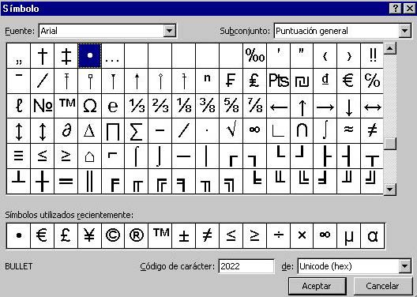
La herramienta de texto
En el botón cuadro de texto de la barra de herramientas de dibujo
permite introducir textos en cualquier punto de la pantalla, sin necesidad de tener que limitarse únicamente a los dos cuadros de marcaje que vienen dados por defecto. Su modo de empleo es muy sencillo. Basta con hacer un clic sobre el icono y después otro clic en el lugar de la diapositiva donde se quiera añadir el texto.
Inmediatamente aparecerá un cursor parpadeando: ya se puede añadir el texto a través del teclado.
Si desea insertar en la diapositiva Word Art, pulse el botón Word Art en la barra de herramientas Dibujo . Seleccione el efecto que desee y haga clic en aceptar. A continuación en el cuadro de texto Modificar texto de Word Art escriba el texto que desee incluir, así como el tipo de letra y tamaño, y pulse aceptar.
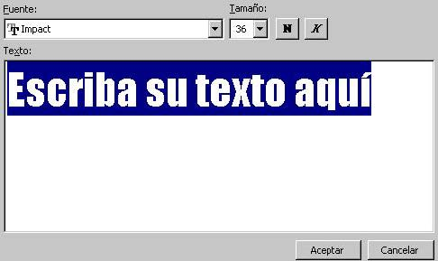
¿Cómo insertar textos elaborados en Word?
La forma más cómoda con la que cuenta en esta aplicación para traer textos elaborados en Word es la de copiarlo en el procesador de textos y pegarlo en la diapositiva, con las opciones Edición/copiar y Edición/pegar.
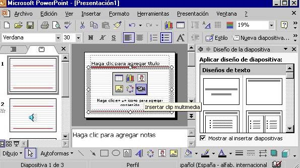
Hacer clic en alguno de los botones contenidos en el área del objeto dentro de la diapositiva según el tipo de objeto a incluir.
También se puede hacer clic en alguno de los botones de la barra de herramientas estándar.
Para insertar un gráfico
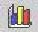
el ratón el número de filas y columnas con la barra de herramientas tablas y bordes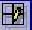
. También clic enDiagrama : puede insertar un diagrama u organigrama.
Cuadro de texto : en los cuadros de texto se puede introducir un texto Películas y sonidos: las diapositivas pueden incluir sonidos y clips de vídeo. Los clips pueden reproducirse o no automáticamente.
Gráfico  : esta opción permite insertar un gráfico en Power Point.
: esta opción permite insertar un gráfico en Power Point.
Tabla : tras definir el número de columnas y de filas, la barra de herramientas Tablas y bordes permite realizar tablas más complejas.
Objeto: permite insertar objetos procedentes de otras aplicaciones.
10.- Trabajar con objetos
Una vez incluidos los objetos que han de componer la diapositiva, Power Point ofrece herramientas para ordenarlos y distribuirlos.
El botón desplegable de la barra de herramientas que aparece en la parte de abajo incluye las siguientes opciones:
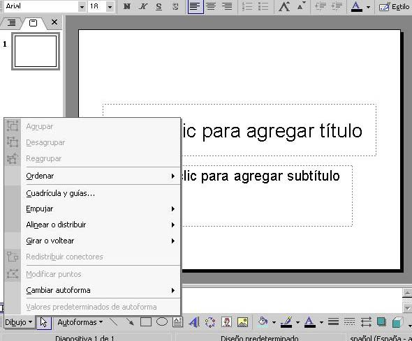
Agrupar, desagrupar y reagrupar: con estas opciones se pueden crear y romper grupos de objetos.
Ordenar: permite determinar el orden relativo del objeto seleccionado en relación con aquellos otros objetos entre los que se halle intercalado.
Cuadrícula y guías: con la cuadrícula y las guías se pueden colocar los objetos en la diapositiva de forma más precisa.
Alinear o distribuir: se pueden alinear y distribuir uniformemente los objetos seleccionados.
Para mostrar la regla que facilita la colocación de los objetos, elegir la opción regla del menú ver.
Animación de objetos y texto
Para aplicar una combinación de animaciones preestablecidas: -Seleccionar las diapositivas a las que se desea aplicar la combinación de animaciones. -Elegir Presentación/Efectos de animación. Aparecerá el apartado combinaciones de animación del panel de tareas Estilo de la diapositiva. -Seleccionar alguna de las combinaciones ofrecidas en la lista. -Para aplicar la combinación a toda la presentación hacer clic en Aplicar a todas las diapositivas.
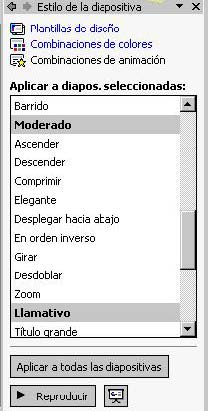
Para crear una animación personalizada:
-Activar en la vista normal la diapositiva en la que se encuentra el objeto o el texto que se desee animar. -Elegir Presentación/Personalizar animación. -Seleccionar el objeto u objetos a animar y elegir alguna de las opciones del botón desplegable agregar.
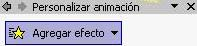
Efecto del panel de tareas personalizar animación.En el que aparecen: Entrada : ofrece efectos para incluir el objeto en la diapositiva. Énfasis : son efectos para resaltar los objeto seleccionados dentro de la diapositiva. Salir :con estos efectos se sacan de la diapositiva los objetos seleccionados. Trayectoria de desplazamiento : este menú incluye opciones para definir el desplazamiento del objeto en la diapositiva. Configurar las opciones de cada uno de los efectos aplicados, como la velocidad de una entrada, el momento de iniciar el efecto o su orden relativo.
Seleccionar las diapositivas a las que se desea aplicar el fondo. Elegir Formato/Fondo. En el cuadro de la lista desplegable de la sección Relleno de fondo, seleccionar alguno de los colores ofrecidos o hacer clic en Más colores para elegir otro color. También en el mismo cuadro de la lista, seleccionar Efectos de relleno para configurar un degradado, una textura, una trama o una imagen como fondo.
11.- Diapositivas patrón
Un patrón de diapositivas es una diapositiva que almacena información acerca de la plantilla de diseño utilizada. La finalidad es permitir que los cambios globales se apliquen a todas las diapositivas de la presentación. Generalmente, el patrón de diapositivas se utiliza para cambiar la fuente o las viñetas, insertar algún objeto, como un logotipo, para que aparezcan en todas las diapositivas.
Cada vez que se cree un documento nuevo, el programa aplicará una diapositiva patrón por defecto.
Para acceder a la diapositiva patrón ha de dirigirse en el menú Ver a la opción Patrón|Patrón de Diapositivas.
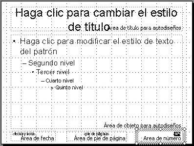
La diapositiva patrón se compone de 5 áreas:
-Título: controla el tipo de letra, color, tamaño y alineamiento del título, los atributos del objeto (relleno, bordes y sombra) y su localización en la diapositiva.
-Cuerpo: controla los mismos parámetros pero en lo que al cuerpo de la diapositiva se refiere. En él se puede dar el formato a cada uno de los subepígrafes.
- -Área de fecha: para insertar la fecha en todas las diapositivas.
-Área de pie de página: para añadir un pie de página a las diapositivas.-Área de número: para numerar las diapositivas.Además, se pueden añadir todos los elementos de fondo que se precisen. Se consideran elementos de fondo de la diapositiva patrón, todos los que se añadan a ésta y que no sea ninguno de los 5 elementos que acabamos de ver. Todos estos elementos añadidos aparecerán en todas las diapositivas que se vayan creando. Son por ejemplo la imagen de un logotipo o un título genérico que se quiera que aparezcan en todas las diapositivas. También se define el esquema de color patrón.
Power Point utiliza tres tipos de patrones:
Patrón de diapositivas: se trata de una diapositiva cuyos formatos y elementos se utilizarán como modelo en todas las diapositivas basadas en un determinado diseño. El patrón de notas incluye un patrón de título que determina el diseño de las diapositivas de título.
Patrón de notas: es una página de notas utilizada como modelo. En ella se puede definir el formato y posición de los encabezados y pies de página, entre otros elementos propios de las páginas de notas.
Patrón de documentos: este patrón define el diseño de los documentos creados con Power Point para la impresión de diapositivas o del esquema.
Se puede modificar el formato de cada elemento de la diapositiva patrón tal y como se ha explicado en los distintos apartados anteriores. Es importante recalcar que no se trata de una diapositiva de contenido, sino de formato. No se introduce Información sino que se le da a cada elemento un formato. Por ejemplo, en el título, no se pone el título de la presentación sino que se especifica el tamaño, el tipo de letra, el color, etc, de manera que al hacer las distintas diapositivas, sólo sea necesario introducir la información, encargándose el programa de aplicar el estilo automáticamente.
De la misma manera se pueden incluir elementos de fondo, es decir elementos distintos del cuerpo y del título. Estos elementos pueden ser de cualquier tipo, imágenes, texto, etc.., con la peculiaridad de que aparecerán en todas las diapositivas. A la hora de hacer las diapositivas, estos elementos no se podrán modificar en la propia diapositiva, sino que cualquier cambio tendrá que hacerse en la diapositiva patrón, y esas modificaciones afectarán a todas la diapositivas.
Una vez establecida la diapositiva patrón, habrá que ir al menú Ver a la opción Diapositivas. La barra de estado le indicará que se encuentra en la diapositiva nº "x", y se podrá comprobar que los elementos de la diapositiva siguen el patrón que se acaba de crear
12.- Las herramientas de dibujo
PowerPoint, además de las posibilidades de insertar fotografías y dibujos elaborados fuera de la aplicación, incorpora una serie de herramientas que permiten crear dibujos propios con los que enriquecer las diapositivas. Son varias las herramientas disponibles. Así, se puede dibujar líneas rectas, curvas, polígonos, rectángulos, elipses, flechas, etc...
Ya se ha visto cómo utilizar la herramienta de texto. El funcionamiento de los restantes iconos que ofrece la barra de herramientas de dibujo es muy similar. Para utilizar una u otra, en primer lugar hay que seleccionarla haciendo un clic sobre ella. A continuación se hace un clic sobre el cuerpo de la diapositiva y se arrastra el ratón sin soltarlo hasta darle las dimensiones que interesen.
Tal vez la herramienta más interesante sea la de crear formas automáticas - -; también aparece haciendo Insertar|Imagen|Autoformas. Con esta herramienta se pueden crear hasta 24 formas distintas automáticamente: cuadrados, trapecios, cubos, triángulos, estrellas, flechas... Para elegir una u otra figura basta con hacer un clic sobre el icono de las formas automáticas (el segundo desde abajo en la barra de herramientas de dibujo) y, sin soltarlo, se mueve el ratón hasta seleccionar una de las figuras. La figura seleccionada aparecerá en el icono cuando suelte el ratón. Para hacer un dibujo, hay que ir al cuerpo de la diapositiva y hacer un clic arrastrando el ratón hasta darle el tamaño adecuado.
Una vez hecho el dibujo deseado, se tendrá que determinar sus bordes, rellenos y sombras.
Bordes, rellenos y sombras
Los objetos de Power Point tienen una serie de atributos que pueden ser aplicados y modificados.
Dichos atributos son el borde o línea, el relleno y la sombra. Todos ellos pueden ser utilizados o no, ninguno es imprescindible.
Por lo que respecta a la línea (y siempre con el dibujo seleccionado), desde el menú Formato|Colores y líneas puede hacer que sea de un color o de otro (Color), regular su grosor (Estilo), hacerla intermitente (Tipo) o convertirla en una flecha (Flechas).
El formato puede ser de objeto, imagen, autoforma,... dependiendo de la procedencia del objeto seleccionado.
En el caso de figuras geométricas los bordes funcionan como líneas y pueden ser modificados de la misma manera que éstas, salvo la opción de flechas, que aparecerá inactiva.
Desde el mismo menú Formato|Colores y líneas se puede rellenar el objeto de un color determinado. Al abrir el menú desplegable del color aparecen varias opciones: Sin relleno; Automático; Seleccionarlo; Más colores; Efectos derelleno; Fondo
Los efectos de relleno, permiten hacer degradados y sombras (Degradado); darle una textura predeterminada (Textura); elegir un entramado (Trama); o usar de relleno una imagen predeterminada (Imagen).
Para el degradado hay que ir a la opción Sombreado y especificar en el cuadro de diálogo el que más guste.
Por lo que respecta a la sombra de la figura, se puede modificar su localización: en la parte superior-izquierda, inferior-derecha, etc, su grosor y su color, a través del menú Formato|Sombra.
Opciones:
-Color: en esta parte se establece si el degradado va a ser de un color a otro o dentro de un solo color, jugando con la tonalidad del mismo. También permite combinar dos colores.
-Estilos de sombreado: se especifica la forma del degradado, ya sea en vertical, horizontal, etc...
Para la trama hay que ir a la opción Entramado y elegir la trama que más guste y el color que van a tener el fondo y la línea de esa trama
Para la textura se va al menú Textura, donde se podrá dar al objeto seleccionado una textura de corcho, nogal, etc...
De todas formas, si en algún momento se necesita que una determinada diapositiva no siga a la diapositiva patrón bastará con modificarla.
13.- Presentaciones en pantalla
Otra de las aplicaciones de Power Point es la de una presentación en pantalla, es decir, la de crear un carrete de diapositivas no para filmarlas, sino para utilizarlas como apoyo en una exposición, por medio de la pantalla del ordenador. Se puede, efectivamente, encadenar las distintas dispositivas, uniéndolas por medio de transiciones, para crear una presentación.
A partir de este momento va a ser muy útil una forma de trabajo que hasta ahora no se había visto: el Clasificador de diapositivas (en el menú Ver). Se trata de una manera distinta de ver las diapositivas, no de una en una, sino en conjunto.
En primer lugar, desde aquí se puede cambiar el orden de las diapositivas, moviéndolas de un lugar a otro simplemente haciendo un clic sobre el icono de la diapositiva y arrastrándola, sin soltar el ratón, hasta el lugar que deba ocupar. Una vez establecido el orden adecuado de las diapositivas, será necesario establecer las transiciones entre las diapositivas, de forma que el cambio entre una y otra no sea brusco.
Transiciones
Para aplicar una transición hay que situarse en la diapositiva destino, pues la transición
afectará al paso desde la diapositiva anterior a la seleccionada. A continuación hay que ir al menú Presentación, a la opción Transición de diapositiva. Inmediatamente aparecerá un cuadro de diálogo en el que se deberá elegir el efecto que quiere aplicar entre una variada lista de ellos. Además de esto se puede indicar la forma de pasar de una diapositiva a otra: por medio de un clic del ratón, o automáticamente tras el paso de cierto tiempo. Se repite esta operación con todas las diapositivas para lograr una presentación de mejor calidad.
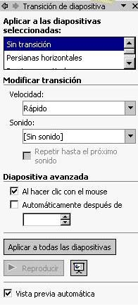
Hay otra herramienta que puede ser de utilidad y que permite establecer "animaciones" dentro de una diapositiva, en su presentación. Se trata de una utilidad a través del cual se puede hacer que las líneas de esquema de una diapositiva (las líneas de texto introducidas en el Cuerpo y precedidas por un punto) aparezcan una a También puede verse al pinchar en la (Barra que aparece cuando se ven las transparencias desde el Clasificador de diapositivas):
Cuando el objeto está seleccionado, al acceder al menú Presentación|Preestablecer de las opciones del listado es la de Presentación|Personalizar animación. Si se elige esta opción se abrirá un cuadro de diálogo donde se podrá trabajar con varias opciones. Permite seleccionar uno a uno los elementos de la diapositiva y ponerles diferentes efectos. Por tanto, permite especificar el efecto a aplicar: posiblemente los más útiles sean los vuelos.
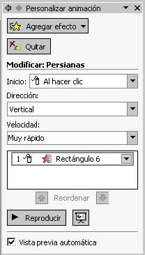
Si se quiere ver previamente el efecto de la diapositiva que se tiene en pantalla, se va a Presentación|Vista previa de la animación, de ésta forma, saldrá una pantalla de tamaño reducido en la que se ve los efectos que se acaban de aplicar a esa diapositiva. Pueden determinarse los tiempos de presentación entre las imágenes de tres modos. Una de ellas, es asignar tiempos iguales en segundos (´´) para todas las diapositivas, desde ésta pantalla. La segunda, de forma manual en la presentación del carrusel, en la que se pasa de una a otra al hacer clic con el ratón. Y la tercera, que permitirá hacer un ensayo de la presentación, grabando los tiempos de presentación de cada imagen; esto último puede hacerse presionando éste icono (), yendo a Presentación|Ensayar intervalos. Saldrá éste cronometro para medir el tiempo que se le da a cada diapositiva: Establecidas las transiciones, para iniciar la presentación hay que ir al menú Ver|Presentación con diapositivas. También pueden dársele órdenes al programa desde (Presentación|configurar presentación). Desde ahí se indica si el avance de las diapositivas es manual o automático (con los tiempos que previamente se han definido) En primer lugar, en la presentación se pueden mostrar todas las diapositivas o sólo una parte, especificando cuáles. Para ocultar una diapositiva, se selecciona Presentación|Ocultar diapositiva. Y se deselecciona del mismo modo. En segundo lugar, se puede señalar cuál va a ser la forma de pasar de una diapositiva a otra: manualmente, por medio de un clic del ratón, o automáticamente, por tiempo. Por último, la opción Repetir el ciclo continuamente hasta presionar Esc, sirve para hacer que la presentación vuelva a comenzar una vez haya llegado al final y no pare hasta que así se le indique. Hechas las elecciones finales, hay que dar a Mostrar, para ver el resultado. La presentación puede ser detenida en cualquier momento apretando la tecla de Esc.
A diferencia de una presentación con un proyector de diapositivas, en la que sólo se pueden mostrar imágenes estáticas (fotografías), en una presentación de PowerPoint se puede insertar un moovie, una pequeña película. Para ello basta con ir a Insertar |película y seleccionar el archivo. Se inserta la imagen de modo normal, y una vez insertada, se hace clic con el botón derecho encima del recuadro de la imagen del vídeo. Aparecerá un menú desplegable en el que busca la opción de personalizar la animación, se hace un clic en ella. Saldrá la pantalla que se ve a continuación. Si se quiere que la animación arranque de forma que se visione como vídeo, se marca el check box de Reproducir según el orden de animación. Pero si se quiere además que la animación arranque automáticamente al visionar la presentación de la diapositiva, se entra por la pestaña de Intervalo, seleccionando ahí las opciones de Animar|Automáticamente, en ella se marca 0 segundos para que comience automáticamente. Es entonces cuando se puede Aceptar, y así el vídeo se reproducirá de manera automática. Cuando la presentación llegue, la diapositiva que contiene la película no pasará a la siguiente hasta que la película haya concluido.Utilizar guíasLas guías son un sistema de alineamiento de objetos en la diapositiva para usarlas de referencia cuando se insertan estos objetos. Se componen de dos líneas discontinuas, una vertical y otra horizontal, que se cruzan en el centro de la diapositiva (punto 0,00) formando dos ejes. Para visualizar las guías hay que dirigirse, en el menú Ver, a la opción guías. Estas guías pueden desplazarse. Para ello hay que hacer clic sobre la guía y sin soltar el botón del ratón, desplazarla. En el momento de hacer clic sobre la guía, aparecerán unas cifras que indican la distancia con respecto al eje que pasa por el punto de referencia 0,00. Por otro lado, también está la opción dentro de los cuadros de texto o de imágenes para que el tamaño del cuadro en que se inserta el texto o la imagen se ajuste a lo que se escribe y/o inserta. Para determinar esa posición, se hace clic dos veces sobre la imagen o, con el botón derecho sobre el texto se elige Formato de autoforma, apareciendo el siguiente cuadro de diálogo y determinando en él las distancias.
15.- Numerar e incluir fecha en las diapositivas
Para numerar las diapositivas existe la opción Insertar Nùmero de diapositiva. Como existe la posibilidad de aplicarlo a todas las páginas, ofrecerá la posibilidad de remitir automáticamente a Ver| Encabezado y pie de página. Desde ahí, se podrá incluir la fecha y la hora, el número de diapositiva y el pie de página. Si no, preguntará dónde se quiere colocar: en el encabezado o en el pie de página. Si se le responde que sí entonces abrirá este menú, donde será necesario especificar, entre otras cosas, la posición en la que se quiere colocar la numeración.
Power Point 2002 permite crear una presentación consistente en un álbum de fotografías. Seleccionar la opción del menú Insertar/imagen/Nuevo álbum de fotos. Aparecerá el cuadro de diálogo Álbum de fotografías. Para agregar una imagen guardada en archivo, hacer clic en el botón archivo o disco. Para insertar un cuadro de texto en el que poder escribir el comentario de una foto del álbum, hacer clic en el nuevo cuadro de texto. Las imágenes y cuadros de texto insertados aparecen en la lista imágenes del álbum. Utilizar los botones de flechas para cambiar la posición de las imágenes dentro del álbum y el botón quitar para eliminar una imagen. En la sección diseño de álbum, seleccionar el número de imágenes por diapositiva. Indicar también una forma para el marco de cada foto y una plantilla de diseño que aplicar a la presentación. Hacer clic en crear. Una vez creado el álbum, introducir el texto en los títulos de diapositiva o en los cuadros de texto.
Es aconsejable que a la hora de realizar presentaciones se sigan una serie de pasos:
1- Guardar el documento al principio y cada cierto intervalo de tiempo.
2- Determinar el formato de la diapositiva. Tener en cuenta que si después de haber diseñado las diapositivas se cambia el tamaño de las mismas, la disposición de los distintos elementos cambiará y será necesario volver a revisarlas todas.
3- Determinar el esquema de colores. Ahorra mucho trabajo.
4- Utilizar plantillas. Bien las del programa o las suyas propias.
5- Si se comete un error, éste puede ser subsanado con la opción Deshacer del menú Edición.
Andaluzsoy